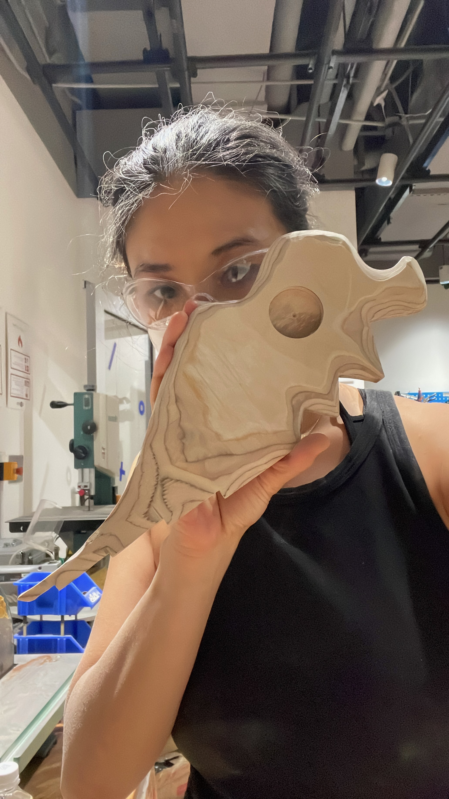
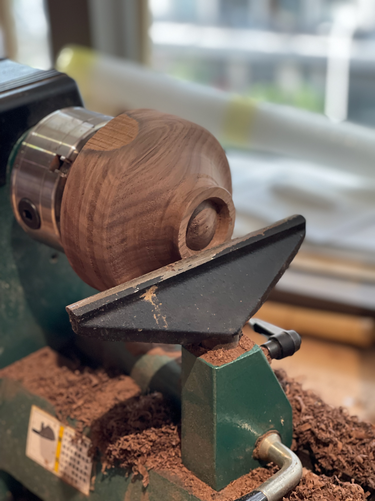
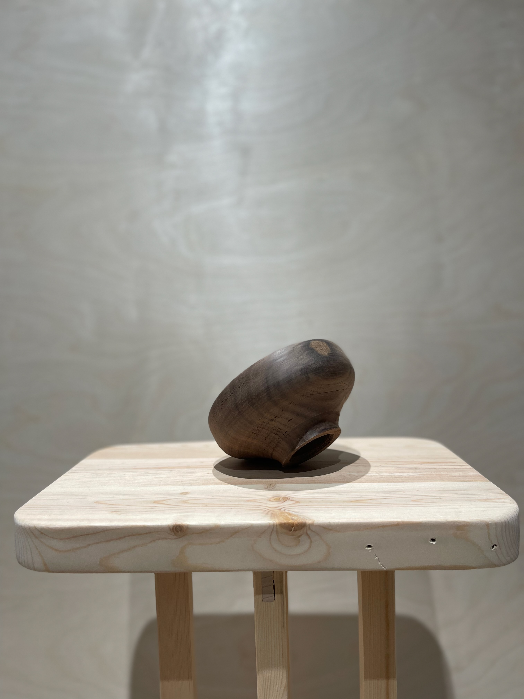
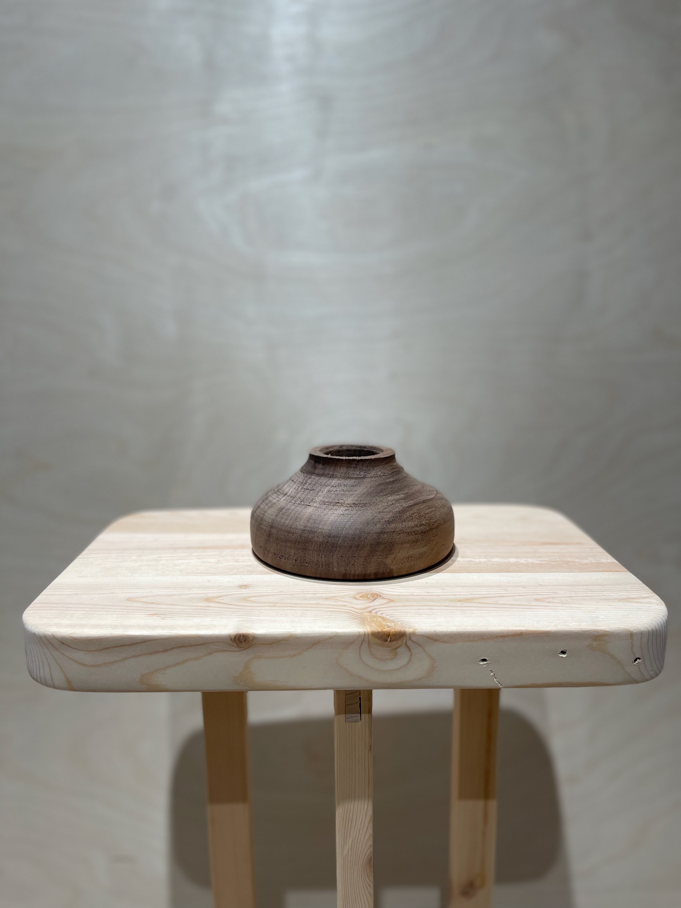
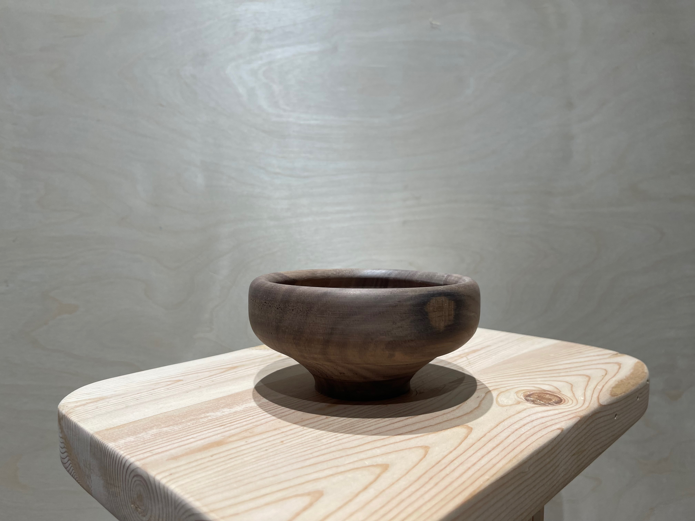
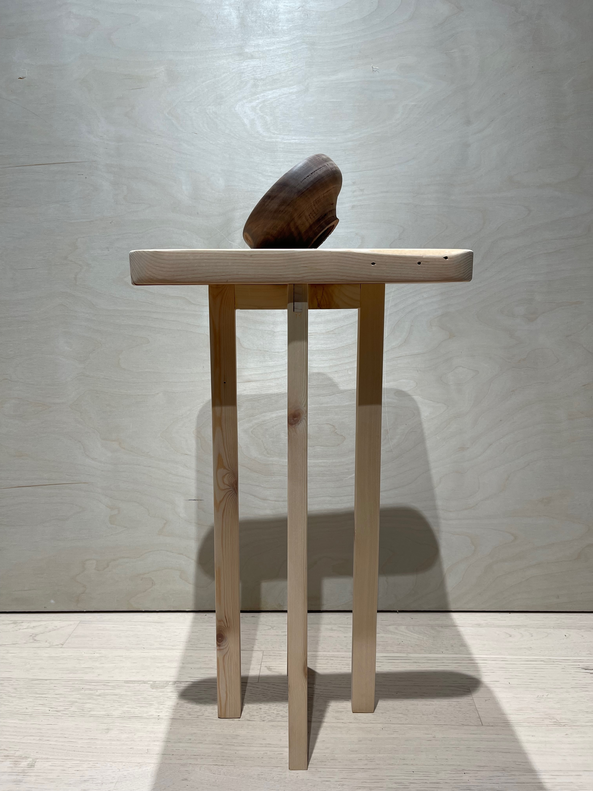
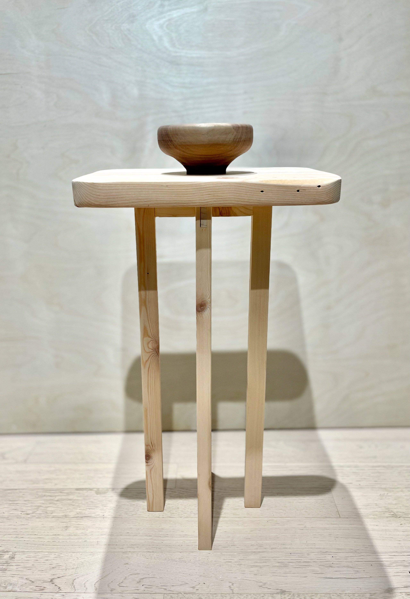
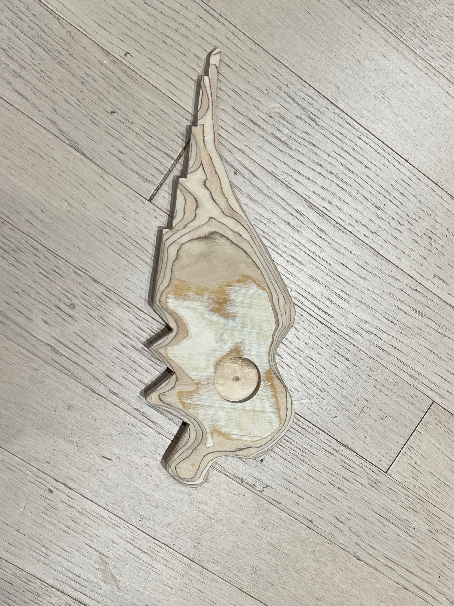
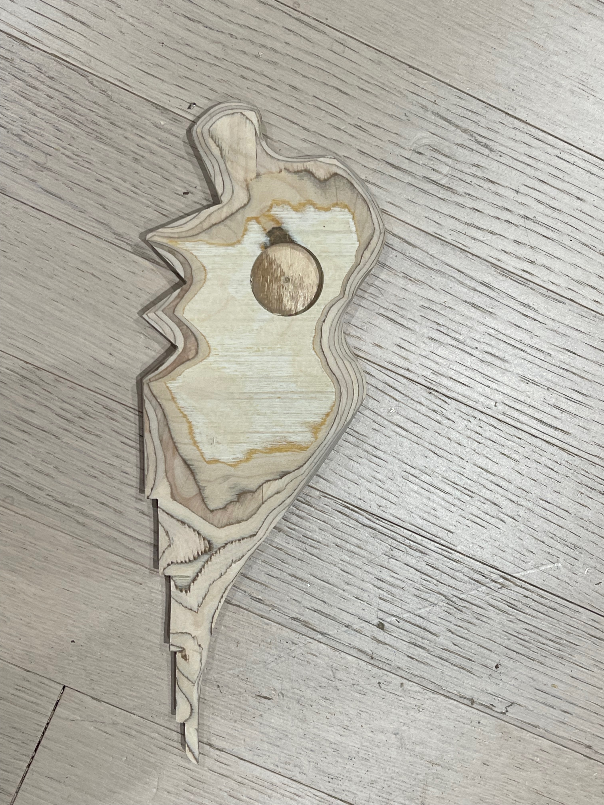
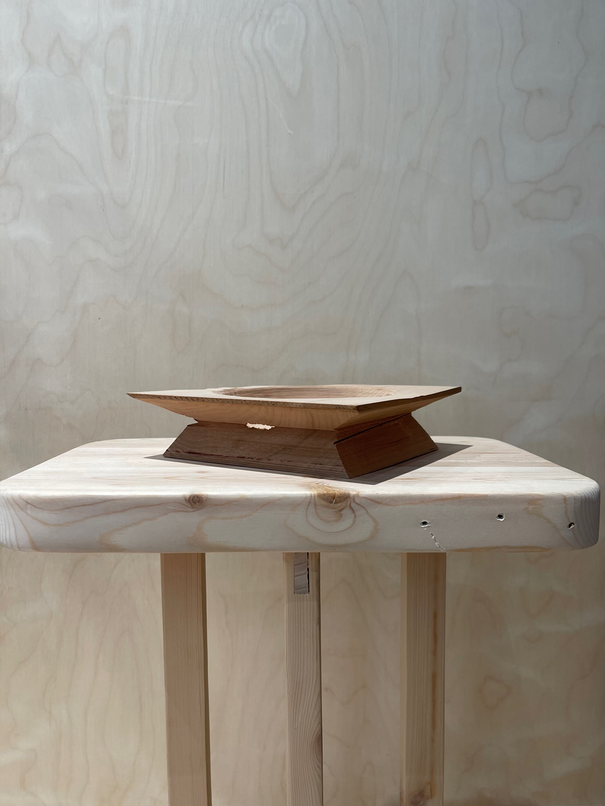

woodworking
Ongoing material practice in the wood shop — bandsaw cuts, joinery, lamination, and hand finishing. Each piece is an exercise in understanding wood as a living material: its grain, resistance, and the way it holds a mark.








